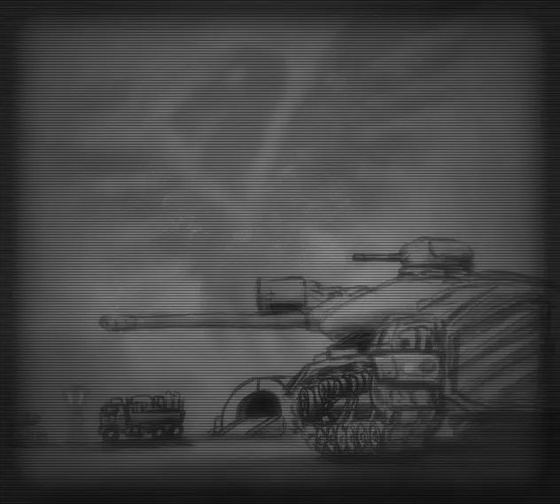

红警2：尤里的复仇Mod
万世之战

v0.3的内容
☆ 代码：
v0.3预计会修复遭遇战Bug，继续调整平衡性，同时为未来的战役增加新的单位。
同时，AI也会根据反馈逐步完善。
☆ 载具单位：
遭遇战的所有载具单位已经制作完毕，v0.3将会制作部分任务中的载具单位。
☆ 建筑和步兵：
v0.3将会替换部分公共素材的建筑。
☆ 地图：
v0.3将会更新一张全新的遭遇战地图。同时，盟军的第一关任务已经完成，第二关任务正在开发中。
☆ 音源：
音源目前处于低优先级，因此将在未来逐步完善。
使用平台

安装教程
第一步：确定你的《红警2：尤里的复仇》是1.001版本，该版本可以通过购买《命令与征服：终极合集》获取。
第二步：下载《万世之战》Mod文件，用解压软件解压后，将得到的文件复制到尤里的复仇客户端根目录。万世之战Mod文件会自带Ares和Phobos平台。
第三步：双击客户端中的[万世之战启动.bat]文件开始游戏。